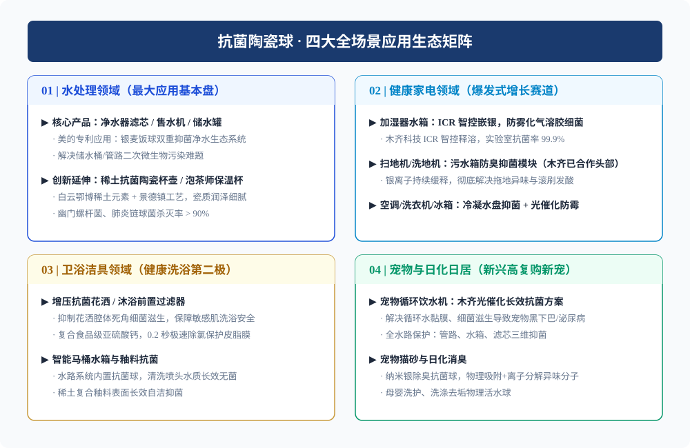
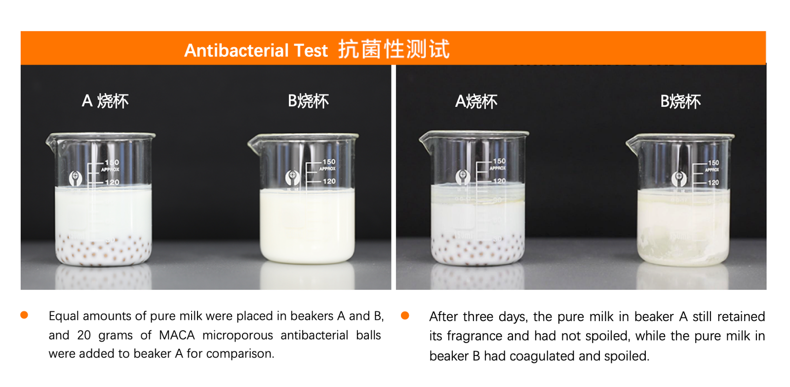
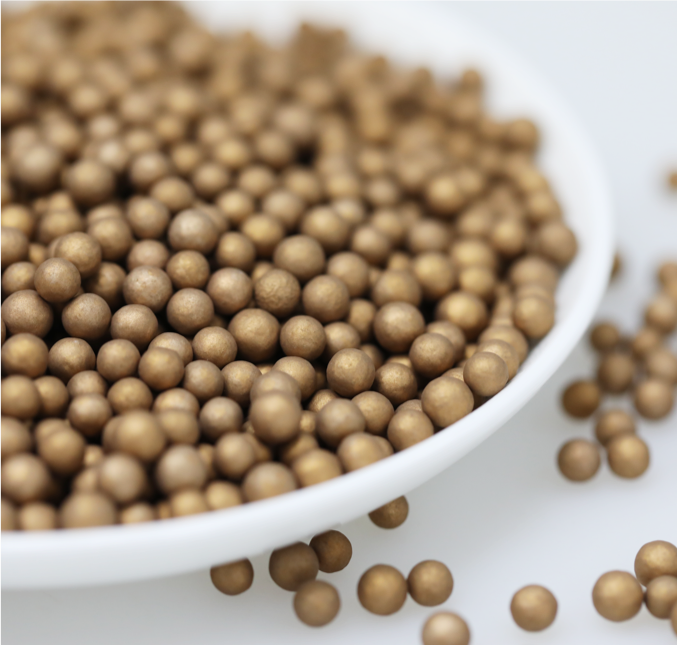
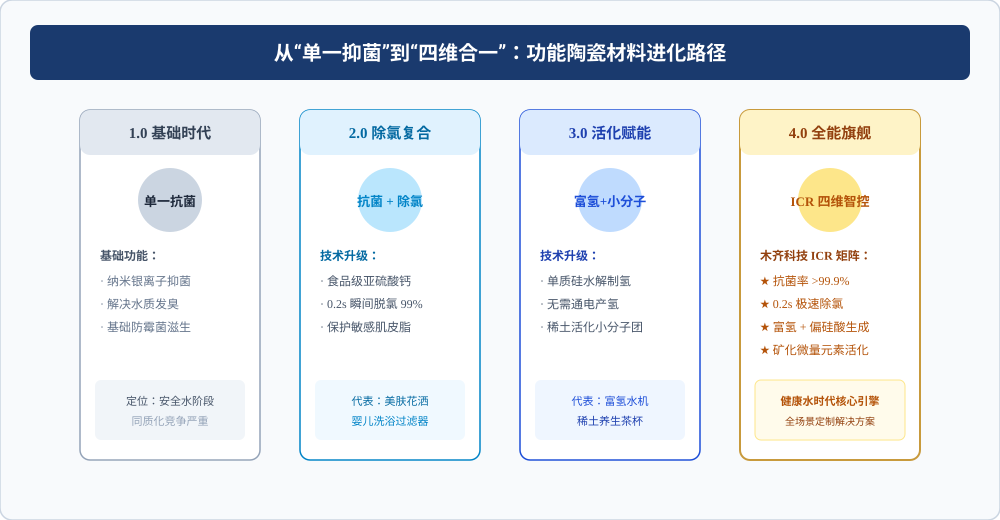

Executive Summary: Modern smart appliances have evolved in motor power and navigation algorithms, yet water stagnation odor remains an Achilles' heel. This article reveals how leading appliance and water purification brands deploy MACA-KDF Inorganic Antimicrobial Ceramic Balls powered by ICR (Intelligent Controlled Release) to achieve 12-24 months of maintenance-free bacterial inhibition.

Figure 1: High-Temperature Sintered MACA-KDF Inorganic Antimicrobial Ceramic Alloy Media.
1. The Appliance Industry's Hidden Dilemma: "Water Circuit Vulnerability"
In household cleaning robots, warm-mist humidifiers, and undersink RO purifiers, stagnant water develops severe bacterial biofilms within 24 hours. The resulting sour smell in dirty water tanks and white powder/bacterial mist from humidifiers have become primary causes of negative consumer reviews.

Figure 2: Full-Scenario Application Ecological Matrix across Smart Appliances, Water Purification, Sanitary Ware & Pet Care.
2. Core Applications Across Four Major Sectors
Inorganic antimicrobial ceramic media operates seamlessly across high-temperature, pressurized, and stagnant water environments:
| Application Sector | Primary Pain Point | MUQI Ceramic Solution | Key Material / Technology |
|---|---|---|---|
| Smart Cleaning Appliances (Robot Vacuums / Floor Scrubbers) |
Wastewater tank sour smell, mop mildew & secondary bacterial contamination | Slow-release silver ion module in clean/dirty tanks | MACA-KDF Antibacterial Ceramic |
| Water Purification Systems (RO Filters / Carbon Blocks) |
Biofilm growth on post-carbon filters, secondary pipeline pollution | Composite carbon rod balls & in-line post-filter modules | Inorganic Antibacterial Filter Media |
| Healthy Sanitary Ware (Beauty Showers / Smart Toilets) |
Residual chlorine irritation, nozzle bacterial buildup | Dual-action dechlorination & antibacterial cartridge | Calcium Sulfite + MACA-KDF |
| Pet Care & Humidifiers (Smart Waterers / Ultrasonic Mists) |
Saliva-induced slime in pet bowls, airborne bacterial mist | Food-grade floating/submerged antibacterial blocks | Food-Safe Inorganic Silver Ceramic |

Figure 3: Laboratory Comparative Milk Preservation Test: Milk with MACA Ceramic Balls remained unspoiled after 3 days.
3. The ICR Breakthrough: Solving the 30-Day Failure Curse
Traditional silver-doped plastics or dipped coatings suffer from severe "burst release" (excessive heavy metal leaching initially, followed by rapid exhaustion within 30 days). MUQI Technology addresses this through ICR (Intelligent Controlled Release) technology.

Figure 4: Comparison between ICR Zero-Order Steady Release and Traditional Dip-Coating Burst Curves.
The ICR Tri-Mechanism Advantage:
1. Lattice Solid-Solution Sintering: Nano-silver is fused into ceramic matrix micropores at 1000°C, eliminating physical shedding.
2. Zero-Order Kinetic Release: Steady parts-per-billion (ppb) silver ion dissolution ensures continuous efficacy for 12 to 24 months.
3. Four-in-One Multifunctionality: Seamlessly combines with food-grade calcium sulfite (0.2s instant dechlorination) and solid-state hydrogen generation.

Figure 5: Microscopic Structure and Uniform Particle Sizing of MACA-KDF Ceramic Spheres.

Figure 6: Functional Evolution from Single Antibacterial Action to Four-in-One Synergy (Antibacterial + Dechlorination + Hydrogen + Mineralization).
4. Industry Standards & Quality Authority
As a first committee member of the National Standardization Technical Committee on Antibacterial Surfaces (SAC/TC621), MUQI Technology provides complete testing credentials including RoHS, REACH, and drinking water safety certifications.

Figure 7: Authority Endorsement as First Committee Member of SAC/TC621.
5. Frequently Asked Questions (FAQ)
Q1: Why do robot vacuum wastewater tanks smell sour, and how does ceramic media fix it?
A: Wastewater generates rapid bacterial biofilm (Pseudomonas, E. coli) within 24 hours. Placing an ICR silver ceramic module in the tank ensures steady micro-dissolution of silver ions, preventing biofilm formation and eliminating odors at the source for up to 2 years.
Q2: Can MACA-KDF ceramic balls be customized into existing filter cartridges?
A: Yes. MUQI provides custom particle sizes (1-10mm), hollow spheres, injection-molded module cases, and compound formulas tailored to OEM client flow rates and dimensions.
Accelerate Your Appliance Water Health Upgrades
Contact MUQI Technology for technical specifications, custom cartridge designs, and free sample batches.
Request OEM Samples & DatasheetsRelated Topics & Media
Ad Space
Google AdSense — Responsive Ad Container